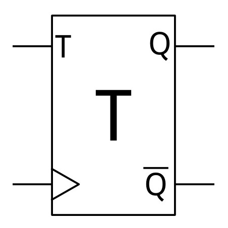
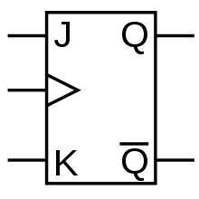
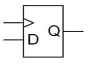

Tipos de Flip Flop
Tipo T
Os flip-flops T (toggle) possuem entradas clock, T, PRE, CLR, e saídas Q e Q'. Estes são, basicamente, flip-flops nos quais o estado das saídas é alternado na borda de subida do clock quando a entrada T esta em nível lógico 1.

Flip-flop J-K
O flip-flop J-K aprimora o funcionamento do flip-flop RS interpretando a condição S = R = 1 como um comando de inversão. ... A combinação J = 0, K = 1 é um comando para desativar (reset) a saída do flip-flop; e a combinação J = K = 1 é um comando para inverter o flip-flop, trocando o sinal de saída pelo seu complemento.

Flip-flop D
O flip-flop D ("data" ou dado, pois armazena o bit de entrada) possui uma entrada, que é ligada diretamente à saída quando o clock é mudado. Independentemente do valor atual da saída, ele irá assumir o valor 1 se D = 1 quando o clock for mudado ou o valor 0 se D = 0 quando o clock for mudado.

Antes de você fechar essa pagina tente testar os conhecimentos adquiridos com conteúdo acima em nosso quiz sobre Tipos de Flip Flop basta:CLIQUE AQUI.